AI从Working、Coding到Oncall：腾讯视频如何让知识流动起来？
作者：adawswang 共同作者：seasonzhou
我们常调侃自己讨厌两类人，一类是不写文档的人，另一类是让我写文档的人。文档是知识的一种，在AI生产力爆炸的今天，有了 AI 似乎就能轻松建知识库、快速写文档，好像「既要又要」唾手可得。但是真的是这样吗？
在视频这个复杂业务体系下，我们有 Working、Coding、OnCall 三类常见的典型工作，分别对应业务、交付、运维支撑业务——知识是它们共同的底座，本文我们将来分享视频技术部在知识方面的一些思考和实践。
一、背景：从个人到组织提效的转变
1.1 知识：组织型 AI 的土壤
烟火盛宴 · 个人型 AI 的狂欢：上半年是一个“个人型AI的盛大狂欢”，人人都成了“全栈”、个人效率看似数以十倍在疯涨、个人想法也以指数级在喷涌而出，看起来个人的效率已经快到了难以置信的程度，“一个人能xxx / 几分钟能xxx……”，诸如此类的宣传不绝于耳，然而从组织视角来看，组织的效率、组织的有效产出/进展却远远没有这种体感。
烟花易冷 · 个人的火如何照亮组织：为什么会有这样的现象产生？核心问题在于：个人效率↑ ≠ 组织产出↑，个人技能提升了，但是组织的工作流并没有得到重塑。我们从过去的历史进程中学习到，伴随着每一次工业革命，可观测到的生产率在短期内不仅没有增长，反而出现停滞甚至下降的经济现象，身处AI时代的今天，我们面临了同样问题，这些问题集中体现在：
- 知识不沉淀：最好的 prompt、经验、上下文锁在个人脑里/本地，离职即蒸发。
- 能力不复用：A 的最佳实践无法自动传给 B，组织在"重复造火花"。
- 标准不统一：人人 Vibe Coding，质量参差，治理失控。
- 上下文孤岛：AI 拿不到组织级的数据 / 血缘 / 规范，只能在个人范围打转。
- AI 鸿沟：用得好和用不好的人差距被拉大，组织被撕裂而并非被抬升。
- 企业特性缺失：缺乏权限管控、审计日志、合规审查等企业级必备能力
- 流程失连：组织的工作是复杂的，通常是分散在各种零散的N多个系统上，系统内的技术债、经验债缺少治理/沉淀，系统间缺少衔接，协作难度高。
……
经过上半年的摸索和实践，我们认为AI Agent在业务各场景的应用过程中是存在一个渐进式发展的路径的，我们基本形成了比较清晰的共识，建立了《L0～L5 的AI应用成熟度》模型，如下：
| 段位 | 名称 | 类比 | 人的角色 | AI形态 |
| L0 | 纯人工模式 | 无自动化 | 全部执行者 | 无 |
| L1 | AI工具渗透 | 驾驶辅助 | 工具使用者 | 独立AI应用 |
| L2 | AI流程嵌入 | 部分自动化 | 流程主导者 | 嵌入式Copilot |
| L3 | Agent协作 | 有条件自动化 | 审批者/决策者 | Agent工作台 |
| L4 | 高度自治 | 高度自动化 | 监督者/战略家 | 自治Agent系统 |
| L5 | 完全自治 | 完全自动驾驶 | 目标设定者 | AI运营大脑 |
我们当前的大部分场景正处于L2末期、L3初期的阶段，L2与L3之间的理念存在着天然的鸿沟，这是一条分水岭。在L2以及L2之前，整体工作由人来承接和驱动，AI的作用是辅助，在L3以及L3之后，工作将由AI来承接和驱动，人来辅助和确认。
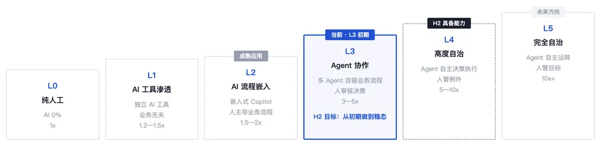
图 1 AI应用成熟度模型
春种一粒粟 · 知识是组织型 AI 的土壤：上半年的实践里，各团队对 AI 的实现与落地方式各有千秋、各显神通，但对一个前提的认知高度一致——应用是长在土上的庄稼，知识是组织型 AI 的土壤。怎么种庄稼可以各显神通；可土若不肥，播下的每一粒种子都难有收成。
1.2 痛点：从一部剧的周期说起
腾讯视频的一部剧，会经历筹备、上片预热、热播运营和长尾经营。从排播、宣发、资源配置，到互动玩法开发，再到上线后的反馈分析和故障处理，每个阶段都在生产和使用知识。
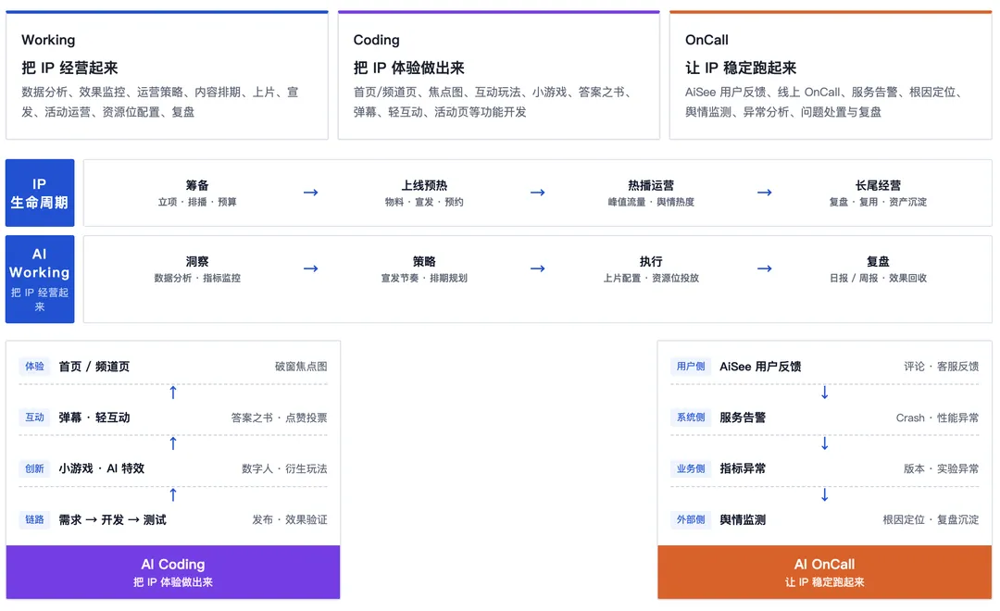
图 2 IP 生命周期中的 Working、Coding 与 OnCall
| 工作流 | 核心定位 | 典型工作 | 依赖的知识与上下文 | AI 加入后的变化 |
| Working | IP 运营与经营 | 数据分析、内容排期、宣发、资源配置、活动运营、复盘 | 历史数据、用户画像、运营 SOP、排期、内容资产 | 从人工查数和配置，走向持续洞察、生成策略并辅助执行 |
| Coding | IP 产品与体验建设 | 首页与频道、焦点图、弹幕互动、轻互动、小游戏、活动页 | PRD、设计规范、组件库、代码、接口、埋点、测试规范 | 从逐层理解和开发，走向基于上下文生成、联调、验证和迭代 |
| OnCall | IP 线上运行与保障 | 用户反馈、服务告警、根因定位、异常处置、复盘 | 反馈、日志、监控、发布、实验、代码、历史 Case | 从人工排查，走向自动感知、归因、处置和知识沉淀 |
这三条工作流前后相接：Working 发现该做什么，Coding 把机会变成产品能力，OnCall 观察它在线上跑得怎么样；运行结果再回到下一轮 Working 和 Coding。
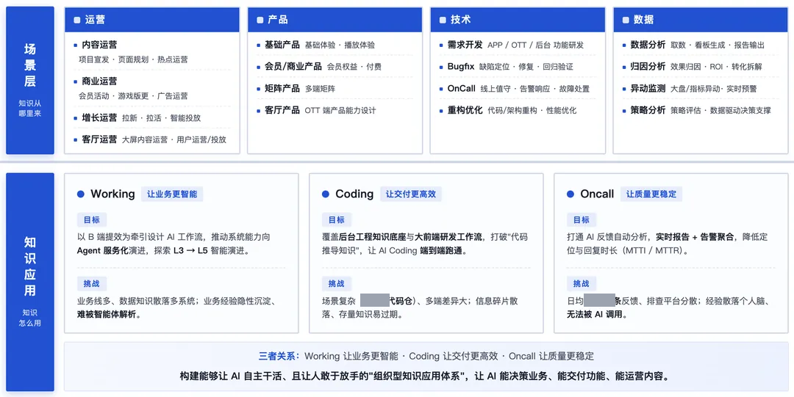
图 3 三类工作场景及其共同知识底座
过去的问题是，知识跟着系统、项目和个人分散存放。Working 的业务口径、Coding 的架构约定、OnCall 的排查经验彼此隔离。只在某个点上加一个 AI 工具，很难真正打通整条链路。
因此，我们后续建设都围绕同一个问题展开：怎么让知识从工作中产生，回到工作中使用，并在使用后继续更新。
二、整体思路：知识要流动，也要分层
2.1 从工作中来，到工作中去
我们把知识链路拆成三个基本环节：
- 生产：从代码、数据、文档、案例和真实操作中提取知识；
- 消费：在分析、开发、排障等任务中，让人和 Agent 按需调用；
- 管理：根据使用反馈做更新、去重、评测、审核和权限控制。
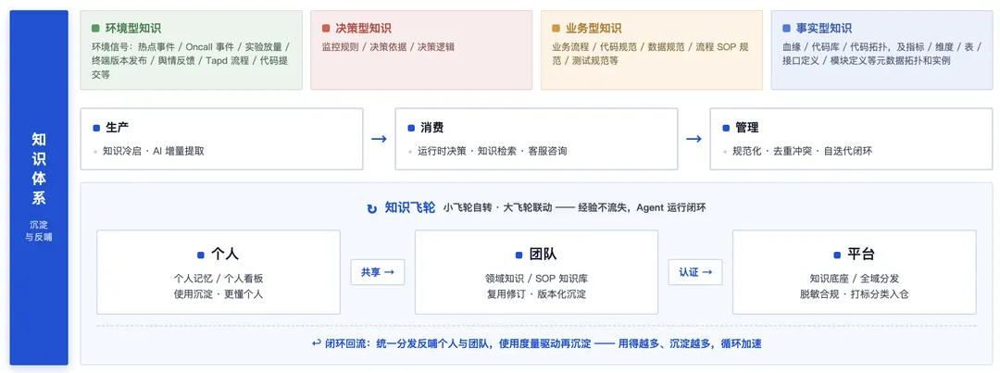
图 4 知识从生产到消费，再通过反馈持续更新
这套链路有一个硬要求：知识更新必须尽量发生在真实工作里。依赖“事情做完以后再补文档”，长期一定会断。更可行的做法，是在提交方案、完成 Review、标注根因或关闭问题时，同步捕获可复用的经验。
2.2 从个人知识到团队知识，再到平台知识
知识流动还有第二条路径：个人、团队和平台之间的流动。
- 个人知识：一次排查结论、一个好用的 Prompt、一段操作经验；
- 团队知识：经过整理和验证，进入团队仓库、领域知识库或标准 Skill；
- 平台知识：进一步抽象为通用规则、公共工具和统一接口，供更多团队复用。
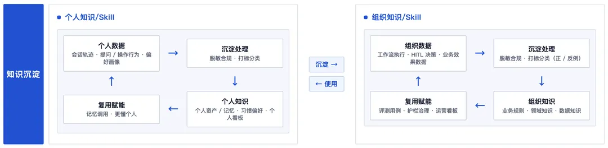
图 5 个人、团队、平台之间的知识沉淀与复用
关键不在于把个人文档上传到公共目录，而在于完成四步转换：
个人判断 → 结构化资产 → 真实任务验证 → 工作流默认消费
缺少任何一步，知识都很难长期复用。没有结构化，系统找不到；没有验证，团队不敢用；没有接入工作流，最后仍然依赖个人记忆。
2.3 四类知识要分开管理
在实践中，我们把知识分成四类：
| 类型 | 回答的问题 | 典型内容 |
| 环境型知识 | 现在发生了什么 | 热点事件、OnCall 事件、实验放量、终端版本、舆情、代码提交 |
| 决策型知识 | 为什么这样判断，下一步怎么走 | 监控规则、决策依据、归因逻辑、阈值和护栏 |
| 业务型知识 | 按什么标准做 | 业务流程、代码规范、数据规范、SOP、测试规范 |
| 事实型知识 | 具体用什么 | 数据表、指标、API、代码拓扑、模块定义、历史实例 |
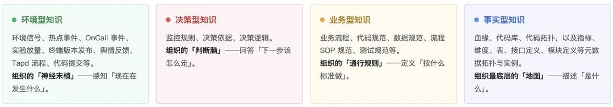
图 6 环境、决策、业务、事实四类知识
四类知识对应一句话：在什么情况下，为什么做这个判断，按什么标准，用哪些事实完成任务。
分层的价值很直接：环境知识更新快，事实知识规模大，业务知识需要 Owner 维护，决策知识需要评测和审计。如果全部混在一个库里，更新频率、权限和检索方式都会互相干扰。
2.4 我们用什么标准判断知识是否真的可用
一份知识进入系统后，至少要满足五个条件：
- 找得到：目录、元信息和路由能把任务带到正确范围；
- 用得上：内容能直接支持分析、设计、编码或排障，不只是一段背景介绍；
- 可追溯：知道引用了哪条规则、哪个案例、哪个版本；
- 可验证：能通过数据结果、编译、测试、评测或人工审核判断对错；
- 能回流：实际使用中发现的问题，可以进入下一轮更新。
下面三个场景，分别从业务经营、工程交付和线上保障验证了这套思路。
三、三类场景的建设路径
3.0 总序：从散点建设到组织知识体系 - 知识沉淀的三阶段演进
回头看过去一段时间的视频技术部 AI 实践，知识体系并不是一次性设计出来的，而是随着 AI 从“工具提效”走向“工作模式转型”，逐步演进出来的。
整体上，我们把这条路径分成三个阶段。
第一阶段：散点渗透——AI 进入场景
最开始，各中心更多围绕自身问题独立建设 AI 能力。
研发域里，AI Coding、代码生成、Review、测试、知识问答等工具快速渗透；业务域里，则更多是在原有数据、运营、内容、商业化等系统上直接增加 AI 能力。
这一阶段首先解决的是：AI 能不能用起来。
典型特征是：
- 场景驱动，各团队独立建设；
- AI 能力嵌入原有系统和局部流程；
- Prompt、规则、案例主要服务单个工具或场景；
- 知识跟着系统、项目和个人分散存在。
这一阶段带来了大量有效探索，也让 AI 快速进入真实生产。但随着场景越来越多，一个问题开始变得明显：局部能力在增长，知识却没有真正流动起来。
第二阶段：工作流牵引——知识进入流程
从年初开始，建设重点开始从“做 AI 工具”逐渐转向“建设 AI 工作模式”。
随着 AI Working、AI Coding 等方向持续推进，我们开始系统思考：如果越来越多工作由 Agent 参与甚至承接，那么支撑这些工作的知识，应该如何被生产、组织、消费、验证和更新。
这一阶段，知识不再只是某个工具的附属能力，而开始成为工作流本身的一部分。
AI Working 开始系统组织数据知识、业务规则和经营经验；AI Coding 开始把公共规则、领域知识、工程经验放进规划、开发、Review、测试和反馈回流全过程。
建设重点也从：“AI 能不能完成这个任务”
转向：“组织能不能持续把正确的知识交给 AI，并让工作结果继续反哺知识。”
知识开始真正形成：
生产 → 组织 → 消费 → 验证 → 回流
第三阶段：组织级知识体系——跨域流动，形成飞轮
下一阶段，我们希望进一步从“场景内知识闭环”，走向真正的组织级知识体系。
这里最核心有两个变化。
第一，业务域和研发域进一步打通。
今天 AI Working 和 AI Coding 已经分别在业务域、研发域形成各自的建设路径，但真实业务本身并不存在这样的边界。
未来需要逐步串联：业务洞察 → 产品决策 → 工程交付 → 线上反馈 → 业务复盘
让 Working、Coding、OnCall 不再是三套相互独立的知识体系，而是同一条业务生命周期上的不同节点。
第二，让个人经验持续沉淀为组织能力。
知识不能主要依赖一次性的专项建设，而应该自然产生于每一次真实工作。
逐步形成：个人经验 → 团队知识 → 平台能力 → 工作流默认消费
个人产生高价值判断，团队完成验证和治理，平台进一步抽象成公共规则、Skill 和基础能力，再由后续工作自动消费。
最终形成真正的知识飞轮：工作产生知识 → 知识进入组织 → 组织知识反哺工作 → 新工作继续产生更好的知识
到这个阶段，我们建设的就不再是一个个独立知识库，而是一套能够持续生长、跨业务与研发流动，并不断把个人经验转化为组织能力的知识体系。
3.1 AI Working：让业务知识进入经营工作流
3.1.1 先解决什么问题
AI Working 面向运营、商业化、会员、产品、体育、客厅等多个业务方向。早期最明显的问题有两个：一是数据知识散在不同系统中，二是业务判断留在专家经验里。
只把数据查询接给模型并不够。模型可以查到指标，却不知道指标为什么变化，也不知道下一步该做什么。为此，我们同时建设数据知识和业务知识，让 Agent 能沿着“数据—洞察—策略—执行—复盘”工作。
3.1.2 知识怎么组织
AI Working 采用三层结构：
- 公共能力层：路由、元数据查询、知识问答等所有业务线共用的能力；
- 业务线子仓：按商业化、增长、运营、会员、产品、OTT、PC、用户画像、体育等方向拆分；
- 公共知识库：统一维护数据表、看板、指标维度、生产逻辑和决策逻辑。
业务语义按照对象、行为和规则组织。这样存下来的不只是“某个指标是什么”，还包括它属于哪个业务对象、在什么动作中使用、判断时遵循什么规则。
3.1.3 知识怎么生产、消费和更新
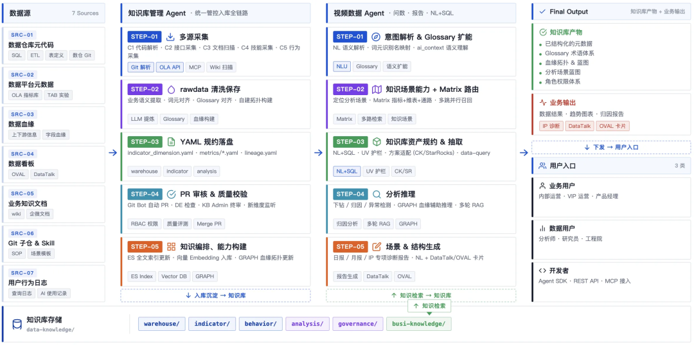
图 7 数据AI Working知识生产消费管理流程
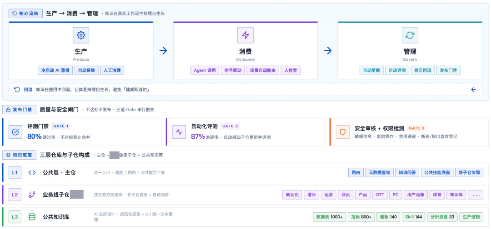
图 8 数据AI Working知识循环
生产：自动采集数据元数据、看板、分析报告和数据生产逻辑；专家重点补充业务操作、决策逻辑和例外情况。
消费：通过 OvWork 工作台统一提供数据查询、分析、内容运营、热点运营、智能投放和任务运维能力。业务人员不需要先知道知识放在哪个系统，由路由把任务交给对应子仓和 Skill。
更新：系统自动感知子仓变化，增量更新数据知识和路由；高频业务案例定期拆解，补充到业务知识中；评测、发布和安全审核作为准入门槛。
治理：业务流程按方向设 Owner，数据知识按主题设责任人；仓库权限、服务端数据权限和审计日志一起管理。
通过OvWork工作台加速个人使用->团队沉淀->平台认证的知识沉淀飞轮，建立个人提效与组织提效的通路：
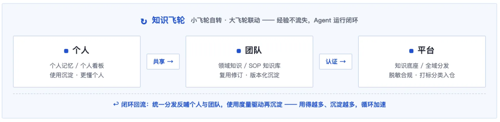
图 9 三级知识飞轮的设计理念
3.1.4 落地效果
以数据AI Working为例，基于Knot Agent + Git ，形成了以环境型知识为感知，决策型知识为判断依据，业务型知识为执行标准，事实型知识为底层基础本体，Agent + 人协作驱动数据全链路应用。
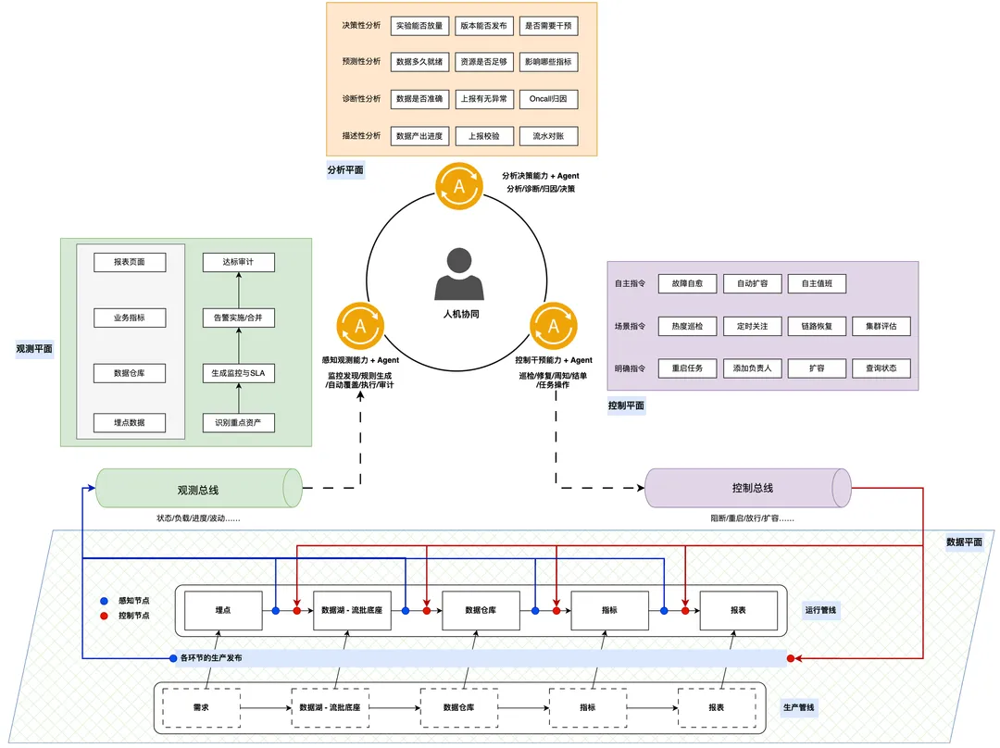
图 10 数据AI Working流程实践示例
- 自助取数 AI 化比例达到 90%，取数从 3～5 天缩短到分钟级；
- OvWork AI Working工作台产运渗透比率 > 80%；
- 数据任务运维中 90%+ 的Oncall由 Agent 跟进分析；
- 数据埋点测试提效约 70%；
3.2 AICoding：让工程知识流进研发交付
AI Coding 的转折点，不是模型突然更会写代码了，而是我们开始从“个人使用 AI”，转向“让整个研发工作流具备 AI 能力”。
早期的 AICoding 更多是工具渗透，各团队围绕代码生成、Review、测试、知识问答等场景独立探索。
随着 AI 开始进入越来越多真实研发任务，我们逐渐发现，规模化的瓶颈已经不是“模型会不会写代码”，而是：
组织能不能把“这个工程里应该怎么做”，稳定地交给 AI。
因此，从今年开始，我们以研发工作模式转型为牵引，系统建设 AICoding 知识体系：不再把知识看成独立的 RAG 或文档库，而是让它在规划、开发、验证、Review 等研发阶段被持续消费，成为研发交付的运行时资产。
目标也从“让 AI 找到更多资料”，变成：
找得到、用得上、引用可追溯、结果可验证、错误能回流。
这也是 AICoding 从第一阶段“工具渗透”，进入第二阶段“工作流建设”的核心变化。
3.2.1 为什么要做：工程经验难以规模化复用
当 AI 从少数人的效率工具进入真实研发流程后，很多原本被个人经验掩盖的问题开始被放大：
- 只看代码不等于理解工程：架构演进、模块边界、默认范式、跨仓关系往往存在于代码之外；
- 存量实现不等于正确答案：历史 bad case 很可能被 AI 当作“最佳实践”继续复制；
- 知识散落在交付链路中：代码、Wiki、MR、Review、编译错误和测试反馈彼此割裂；
- 个人 Context 无法支撑组织规模：多端、多仓、多组件情况下，依赖个人 Prompt 和临时上下文无法稳定复用。
直播三端一码重构把这些问题集中暴露出来，也推动 WorkManager 从一个“AI 写代码”的工具，逐渐演进为知识、任务拆解、执行、验证和反馈一体化的工程系统。
所以我们后来越来越明确：
AICoding 的核心资产，不只是模型和 Agent，更是整个研发组织积累下来的工程知识。
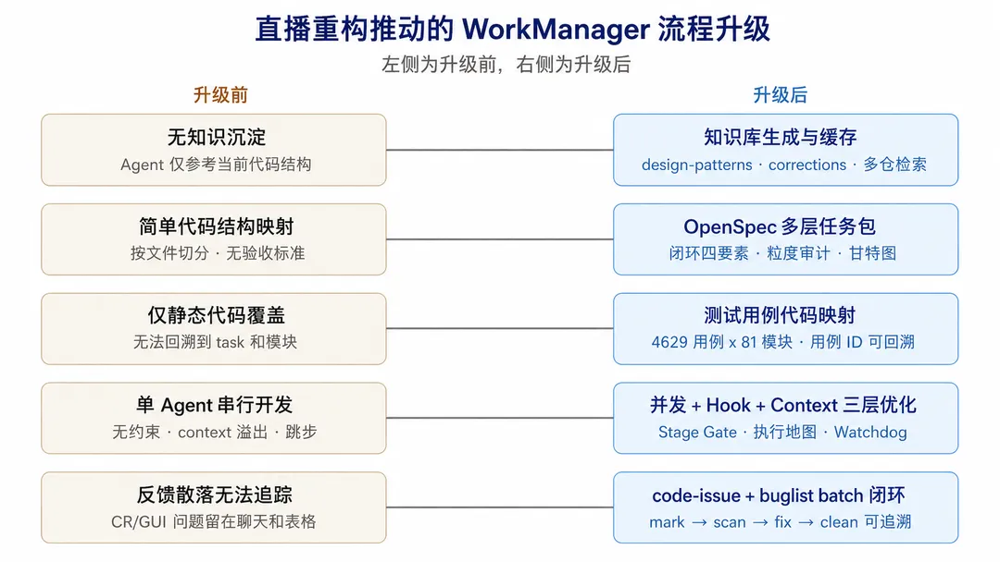
图 11 直播重构推动 WorkManager 从单点工具升级为完整流程
一个典型例子是播放器组件接入。只有 API 和源码时，AI 会参考旧版 Android 架构，在 KMM 下重复实现控制栏；加入架构设计与最佳实践后，方案才真正对齐 KMM 的工程约束。
| 维度 | 传统接入（仅 API / 源码） | 引入架构知识库后 |
| 架构理解 | 盲目参照老架构，混淆新旧插件设计 | 准确理解 KMM 架构逻辑与合并约束 |
| 产出质量 | 产生大量幻觉，重复造轮子 | 一致性高，正确且高效地与已有组件串联 |
| 业务对齐 | UI 与交互大量不对齐，无法直接兼容 | 组件交互对齐，大幅减少人工重构成本 |
所以第一个方法论不是“建 RAG”，而是先识别：哪些关键知识无法从代码本身可靠推导。
3.2.2 方法一：先分层，明确“什么是知识”
AICoding 的知识可以抽象成 三层长期资产，加一层运行时 Working Set：
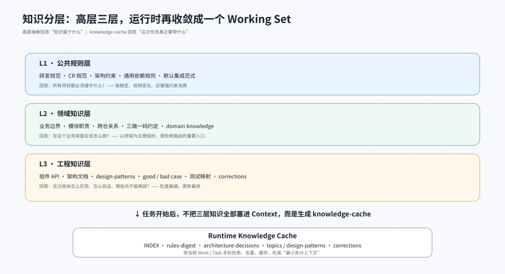
图 12 AICoding 知识分层：长期资产与运行时工作集
| 层次 | 关键词 | 核心问题 |
| 公共规则 | 研发规范、CR、架构约束、通用依赖 | 所有项目必须遵守什么 |
| 领域知识 | 业务边界、模块职责、跨仓关系、默认范式 | 这个业务域应该怎么做 |
| 工程知识 | API、Pattern、Decision、测试映射、corrections | 这次具体怎么实现与验证 |
| Runtime Cache | INDEX、rules-digest、architecture-decisions、topics | 当前 Work 真正需要带什么 |
分层解决“知识属于什么”；Runtime Cache 解决“这次任务真正需要什么”。
这里最重要的是避免两个极端：只靠源码反推业务，以及把所有知识一次性塞进 Context。
3.2.3 方法二：再组织，让领域成为“召回路由”
知识建设不是“整理文档”，而是从生产开始就为 AI 消费设计。整个知识管线分成四段：数据采集 → 知识生产 → 知识资产 → AI 应用。
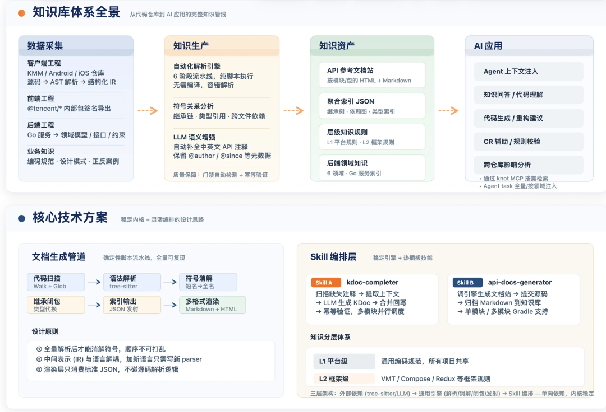
图 13 AICoding 知识生产与资产全景
生产：三路并行。
- 冷启动：通过源码 AST、tree-sitter 生成 API 和架构文档，把历史 Wiki、文档和案例结构化入库；
- 人工沉淀：由 Owner 补充代码无法表达的领域边界、架构决策和公共规则；
- 增量回流：把编译错误、接口误用、Review 和测试问题写入 corrections、learnings 或 knowledge.md。
冷启动解决“历史知识怎么进来”，增量回流解决“新知识怎么持续长出来”。
组织：先定位，再精读。实际检索不是直接在所有知识中做一次全局搜索，而是逐步缩小范围：
领域 / 组件 / 仓库 → frontmatter → MANIFEST / INDEX / 拓扑 → 多轮检索 → knowledge-cache
因此，领域不是为了让目录“看起来整齐”，而是承担了更重要的作用：领域本身就是召回路由。
消费：必须嵌入研发工作流
WorkManager 不依赖 Agent“想起来再查知识”，而是把知识消费绑定到不同 Stage：
- Planner：先继承项目架构与规则，再进行任务拆解；
- Dev：按需读取 Pattern、Decision 和工程知识；
- Review：检查规则、good case、bad case 和知识引用；
- 反馈阶段：把编译、测试、Review 中发现的新问题重新写回 corrections；
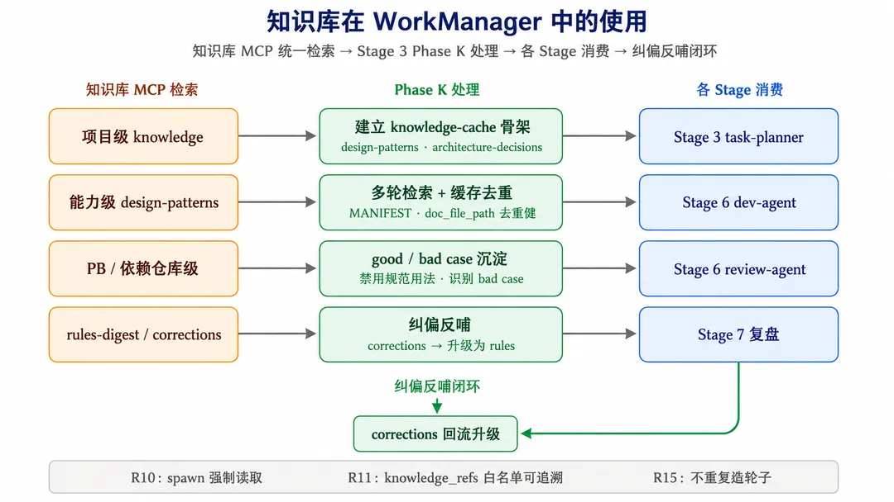
图 14 知识在 WorkManager 各阶段中的消费位置
其中两个工程约束尤其重要，这也是从“知识库”走向“知识运行时”的关键一步：
- knowledge_refs：知识引用必须可追溯
- Stage 强制消费：正确知识必须在正确阶段进入 Context
3.2.4 方法三：可度量，不只看“搜得像不像”
召回效果不能只看相似度，而要看知识有没有真正帮助交付。可以抓五类指标：
- 覆盖：需要知识的 Task，有多少真正拿到了 knowledge_refs；
- 命中：正确的 Pattern、good case、dependency 是否进入 Top-K；
- 消费：Agent 是否真的读取并在对应 Stage 使用，而不是“搜到即结束”；
- 结果：知识注入后，compile、unittest、review 一次通过率是否提升；
- 健康度：重复、冲突、过期、corrections 回流和 rules 晋级是否可监控。
最终度量对象不是 Retrieval 本身，而是“知识是否帮助任务更正确地完成”。
3.2.5 方法四：跑飞轮，让真实交付持续产出知识
真正形成壁垒的不是冷启动，而是后面的飞轮：
真实任务 → 暴露问题 → corrections → 验证与 Owner 治理 → rules、patterns → 下一轮自动继承
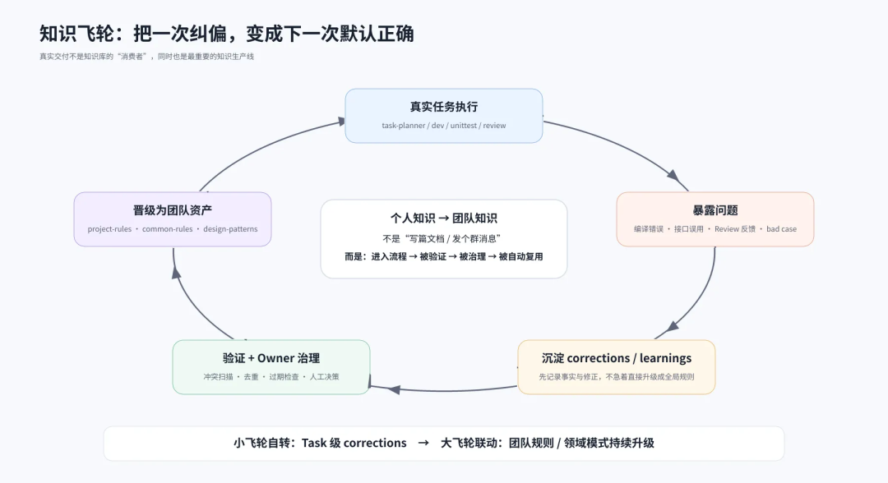
图 15 AICoding 知识飞轮：一次纠偏成为下一次默认正确
这里可以分成两层：
- 小飞轮：Work 内自转：当轮 Dev、UnitTest、Review 发现的问题，不只解决当前 Task，而是进入 corrections，让后续 Task 在同一个 Work 中立即继承；
- 大飞轮：跨 Work、跨团队升级：高频 corrections 经过真实任务验证和 Owner 治理后，逐步晋级为 project-rules、domain pattern、common-rules，让一次交付经验成为更多任务可以复用的默认能力。
这其实也是个人知识进入组织的最小闭环：：
个人判断 → 结构化资产 → 真实任务验证 → 工作流默认消费
只有进入流程、被验证、经过治理，并能被后续任务自动复用的经验，才真正成为团队知识。
3.2.6 效果和总结：让工程知识随交付持续生长
AICoding 去掉skill等数据，模糊数据效果：
• AICoding 已覆盖 700+个业务领域、5w+知识文件。
• 需求 AI 渗透率约 40%；
• 活跃研发渗透率约 60%；
• 各中心全链路提效 17%～50%；
• 直播三端一码重构从预计 1023 人天降至 140 人天，两个月完成 12 万行有效代码交付，提效 86.3%；
这些结果验证了一件事：当知识不再停留在个人 Prompt 和独立文档里，而是进入研发工作流之后，AI 提效才有机会从个人能力变成组织能力。
走到现在，AICoding 已经初步形成了研发域内部的知识闭环：
知识进入交付 → 真实任务验证 → 错误持续回流 → 新知识被下一轮自动继承
这意味着，知识不再主要依赖专项整理，而是开始随着真实研发过程持续生长。
从更长期来看，还需要继续向两个方向演进：
- 向上连接业务知识 需求背后的业务目标、指标口径、用户反馈和业务规则，不应该在研发开始时被重新翻译一遍，而应该逐步成为 Coding 可以直接消费的上游 Context。
- 向外形成组织沉淀 一个人在真实交付中形成的高价值判断，经过团队验证后沉淀为 Pattern；其中稳定、通用的部分，再进一步抽象为平台规则、公共 Skill 和基础能力。
逐步形成：个人经验 → 团队 Pattern → 平台能力 → 工作流默认消费
因此，AICoding 最终要建设的并不是一个越来越大的“研发知识库”，而是一套能够随着真实交付持续生长，并把个人工程经验不断转化为组织能力的工程知识运行时。
3.3 AI OnCall：让每次排障都沉淀为下一次能力
OnCall 最有价值的知识，不在历史文档里，而是在一次次真实问题被解决的过程中。
早期的 AI OnCall 更多是在解决“AI 能不能帮人查问题”：把日志、反馈、监控等能力接给 AI，减少人工查询、归类和分析工作。
但真正做深之后，我们发现核心问题并不是工具够不够，而是：
为什么一个问题今天排查过，下一次遇到类似问题，人和 Agent 仍然可能从头再来？
原因在于，真正有价值的排障经验往往产生于真实工作过程，却没有自然留下。
因此，AI OnCall 的建设重点逐渐从“帮人完成一次排障”，转向“让一次排障产生的经验，成为下一次诊断可以直接复用的知识”。
这也是 AI OnCall 从第一阶段“工具渗透”，进入第二阶段“工作流建设”的核心变化。
3.3.1 为什么要做：排障经验难以持续复用
围绕 AiSee 持续产生的用户反馈，我们逐步建设 AI OnCall，希望解决三个核心问题：
- 依赖专家：复杂问题的关键判断集中在少数熟悉业务的人；
- 能力分散：日志、监控、发布、实验、代码等能力分布在不同平台；
- 链路过长：一次问题定位需要跨越多个端、模块和系统。
最初，我们先把反馈监听、日志分析、根因定位、告警归因和报告推送等能力串起来，让 Agent 能够更完整地参与一次 OnCall。
随着系统逐渐进入真实工作，目标也进一步发生变化：AI OnCall 不只是要回答“这次是什么问题”，还要把排障过程中产生的高价值经验留下来，经过校准和验证后，成为下一次可以直接复用的知识。
因此，整体链路逐渐形成：
问题发生 → AI 分析 → 人工校准 → 知识沉淀 → 评测治理 → 下一次复用
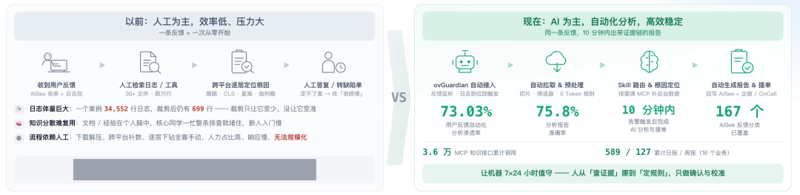
图 16 AI OnCall 的知识建设目标与整体链路
3.3.2 为什么难：知识广、链路长、上下文重
OnCall 难，并不是因为没有知识，而是因为知识分散、动态，而且很难在正确的时间被正确消费。
从值班开发视角看，问题主要体现在：
- 信息多：一次排查要在日志、监控、代码、平台、历史 Case 之间频繁切换；
- 不稳定：同样的问题，不同人可能走出完全不同的排查路径；
- 依赖专家：很多关键判断没有显式沉淀，而是存在于个人经验中；
- 容易断层：问题虽然解决了，但这次经验不会自然进入下一次 OnCall；
- 规模压力大：反馈量、业务端数和问题类型增长后，纯靠人工难以持续。
从建设视角看，挑战则更加工程化：
- 知识散：代码、日志、配置、规则、历史分析和人工经验，都可能成为诊断依据；
- 链路长：一条反馈往往横跨多个模块、多个端和多个系统；
- 知识会变：版本、策略和代码持续变化，过去正确的经验也可能失效；
- 上下文太重：系统可以掌握大量信息，但一次诊断真正需要的，只是少量高价值证据。
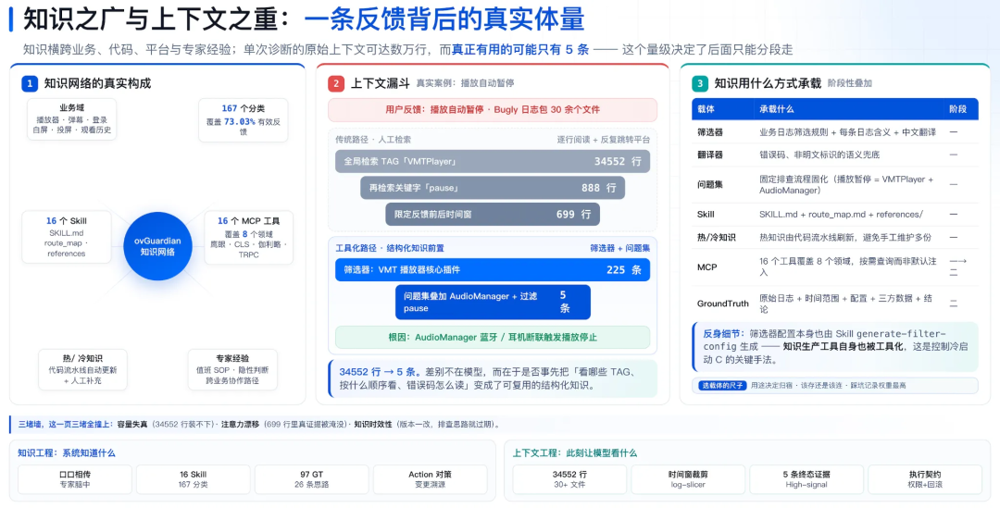
图 17 知识之广与上下文之重：一条反馈背后的真实体量
3.3.3 整体路径：先覆盖，再可靠，后自治
AI OnCall 的建设并不是一步走向全自动化，而是随着知识覆盖和可靠性提升，逐步扩大 Agent 的能力边界。
从知识抽象层看，OnCall 里的知识大致可以分成四层：
- 事实层：发生了什么——日志、指标、配置、版本、平台数据
- 方法层：应该怎么查——排查 SOP、Skill、查询路径、路由策略
- 判断层：凭什么下结论——终态证据、置信度、GroundTruth、规则
- 行动层：下一步做什么——修复、回滚、升级、Action、护栏
在技术决策上，我们一直用 CAR 作为支撑：
- C（Cost）：需要投入多少工程成本
- A（Autonomy）：系统自主做到哪一步
- R（Reliability）：结果是否可靠到足以被信任
先拿覆盖，再换可靠，最后再逐步释放自治。
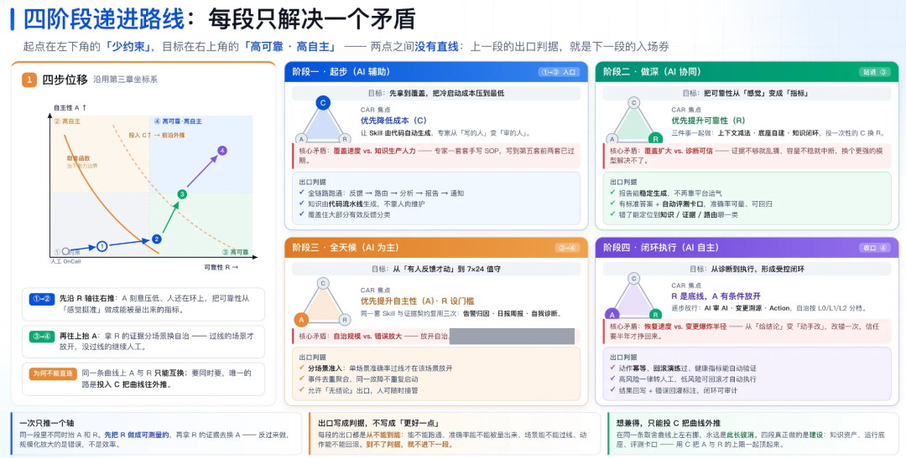
图 18 AI OnCall 的 CAR 决策模型
3.3.4 落地一：先让知识“进得来”
最开始的问题：私域经验在大家的脑袋中，但 AI 什么都不知道。
所以第一阶段的目标很朴素：先获得覆盖。 这一阶段不追求高自治，而是先把知识生产工具化，让系统先能“知道”：
- 从业务代码、历史问题、已有规则和冷知识中抽取首版知识
- 形成基础的 Skill、排查路径和问题分类映射
- 把分散的平台能力收口成统一可调用的工具接口
把知识从“只有人知道”，变成“机器至少能找到、能调用、能执行”。
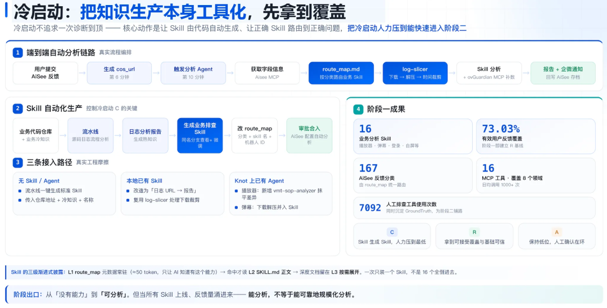
图 19 AI OnCall 冷启动：先完成知识和工具覆盖
3.3.5 落地二：再让知识“长出来”
当覆盖有了之后，新的问题就出现了：长尾问题怎么持续进入系统？个人经验怎么变成组织能力？
很多团队会在这里卡住，因为传统做法通常是问题解决后，要求研发“再补一篇 Wiki”。
更有效的方式，是把知识沉淀嵌进工作流本身：让知识沉淀不再是额外动作，而是完成一次真实工作的自然副产品。
GroundTruth 在这里承担了关键作用。它不只是记录“最终是什么问题”，而是尽可能保留一次人工排障真正有效的过程：
- 查了什么：哪些日志、指标和平台数据；
- 怎么查的：使用了哪些工具和筛选条件；
- 看到了什么：哪些信息构成关键证据；
- 排除了什么：哪些方向被证据否定；
- 为什么得出结论：最终根因对应的判断依据。
再通过工程化链路，把一次真实排障逐步转化为可复用知识：
AI 分析错误 → 人工校准 → 提交 GroundTruth → 自动蒸馏 → Skill 更新 → 单测评估 → Owner 审核
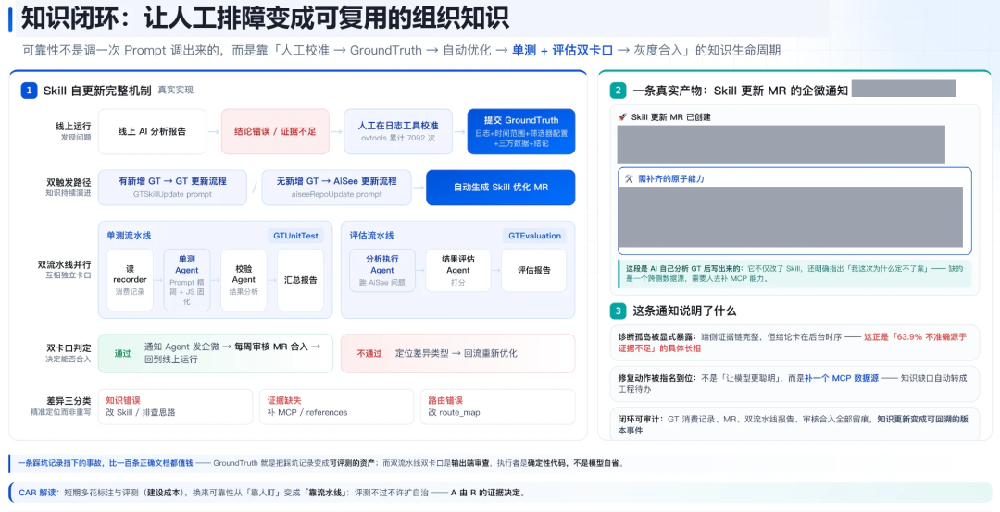
图 20 GroundTruth 从人工校准到 Skill 更新的闭环
这一步解决的已经不只是“把知识写下来”，而是：
让一次人的判断，经过真实问题验证后，进入下一次系统默认具备的能力。
3.3.6 落地三：最后让知识“用得准”
随着知识越来越多、工具越来越全，系统会遇到另一个问题：不是 AI 不知道，而是 AI 知道得太多。
这时的建设重点不再是继续“加知识”，而是开始给上下文做减法。
真正有效的做法不是把所有信息塞给模型，而是通过预处理、事件提取、结构化证据链和缺证据补查，把上下文压缩成最小充分证据。
从“给全部日志”走向“给证据链”，本质上是在做两件事：
- 提高信噪比
- 降低成本与误判
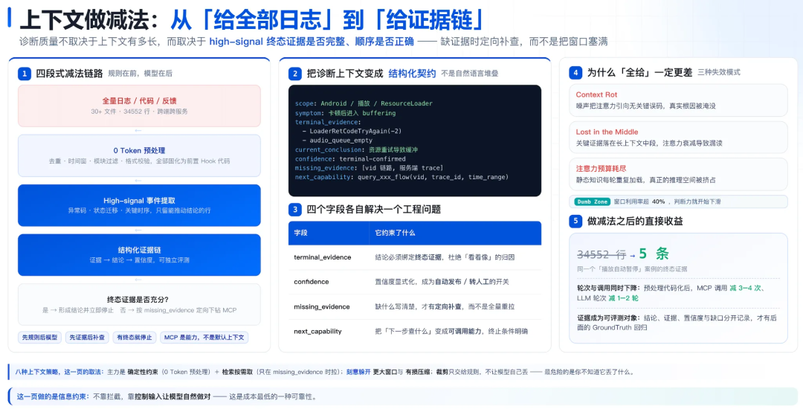
图 21 从全量上下文转向 High-signal 证据链
最终，上下文从 128KB 降到 32KB，报告生成率从 83% 提升到 99% 以上，准确率从 49.6% 提升到 75.8%。
上下文减少后效果反而更好，因为模型看到的不再是“更多信息”，而是更完整、更相关的关键证据。
3.3.7 效果和总结：让知识沉淀融入日常工作流
落地结果:
- 反馈自动化分析渗透率 73.03%，准确率 75.8%
- 告警触发后 10 分钟内完成 OnCall 提单和 AI 归因
- PC 端用两周完成基础设施复刻
回头看 AI OnCall 的建设，真正可复用的并不是某个 Skill、MCP 或 Agent，而是一种新的知识沉淀方式：让知识从真实工作中产生，再回到真实工作中被使用。
- 知识建设不是“建库”，而是“建流” 知识只有进入真实工作流，才能持续被消费、验证和更新。相比“沉淀了多少文档”，更重要的是形成 生产 → 消费 → 校准 → 更新 → 再消费 的持续循环。
- 个人知识进入组织，靠流程，不靠倡议 不再依赖“问题解决后补 Wiki”，而是在真实排障中自然捕获关键证据、分析路径和判断结论，再经过 GroundTruth、评测和 Owner 治理，逐步沉淀为团队知识、Skill、Rule 和平台能力。知识沉淀成为工作的一部分，而不是工作之外的额外任务。
- 知识越多，越要做好上下文选择 系统可以掌握足够广的知识，但每一次诊断只需要最相关、最充分的证据。知识工程负责让系统“知道”，上下文工程负责让模型“看对”，最终从知道得多走向判断得准。
在能力演进上，则继续遵循 “先覆盖、再可靠、后自治”，随着知识、评测和护栏逐渐成熟，再逐步扩大 Agent 的能力边界。
最终，这些实践共同形成了一条持续运转的知识飞轮：
真实工作产生经验 → 流程自然捕获 → 团队验证治理 → 平台沉淀能力 → 下一次工作默认消费
知识沉淀不再依赖某个人“记得写下来”，而是在日常工作中自然产生、持续流动、不断复用。
当知识真正融入工作流，个人经验才会持续转化为组织能力。
再向前，OnCall 中沉淀的用户反馈、业务现象和技术根因，还需要进一步与 AI Working、AICoding 打通，让知识沿完整的业务生命周期持续流动。
四、结语：未来什么样，不试谁知道
回头看，Working、Coding、OnCall 做的其实是同一件事：把原来分散在系统、文档和个人经验里的知识，变成工作流可以直接消费的资产。总的来说，我们在知识沉淀基本上可以分成三个阶段：
- 第一阶段，各场景环节散点式建设，主要是通过给业务域子系统直接加上AI能力，让AI工具在研发域跟业务域进行渗透式提效。
- 第二阶段（进行中），年初开始，AI Working、AICoding，通过以面向AI的新工作模式转型为牵引，开始系统性建设，打通业务跟场景。
- 第三阶段（进行中，以及未来），推进业务域跟研发域打通，落地更多AI Native业务工作流，形成规模化、可复用的个人->组织的持续沉淀能力。
向前看，未来的标准答案是什么，谁也不知道。AI 时代，想象力的边界决定产出的边界，而验证想象的唯一方式是动手大胆去试吧～